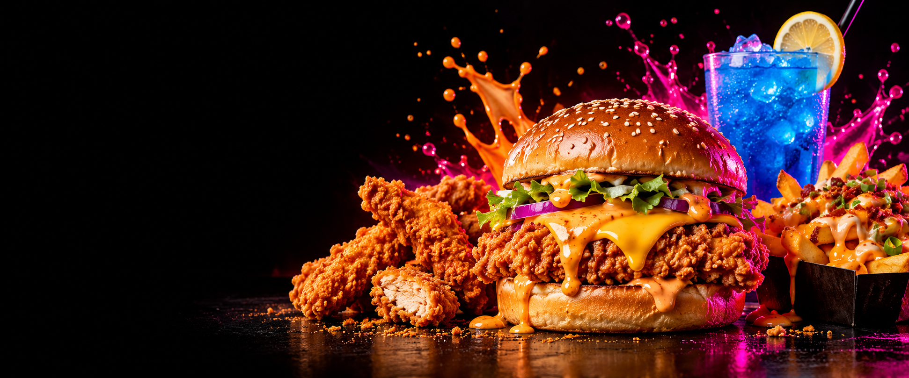
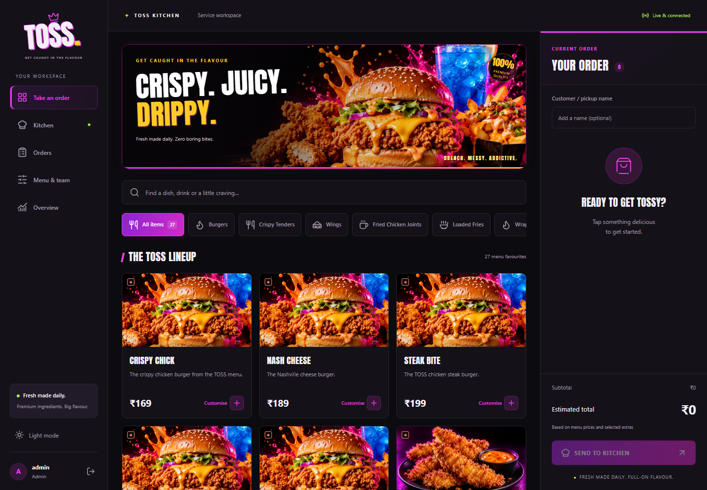

Every order, their way.
Portions, sauces, extras and special requests. Build individual customizations and preserve unfinished drafts on the device.
Food truck POS / Project showcase
From the first custom order to the final pickup. Meet TOSS: a bold counter POS and live kitchen board built for food truck teams.

A look inside
Customize dishes, keep tickets moving, and follow each order from counter to kitchen to pickup.

Portions, sauces, extras and special requests. Build individual customizations and preserve unfinished drafts on the device.
A shared server sends new tickets to the kitchen board. Mark them preparing, ready and completed as service moves along.
Manage the menu, create staff accounts, correct active orders with a reason, and review daily order activity.
Get it running
The complete React, FastAPI and PostgreSQL application is available in the repository, with a Docker setup and deployment guide.
This GitHub Pages site shares the project. The hosting guide sets up the working POS on Render (paid hosting). To sign in, save orders and connect kitchen devices, run the application with its backend and database. No payments are included.
Install Docker Desktop with Compose, then clone the source or extract the ZIP.
git clone https://github.com/babydab18/toss-pos.git
cd toss-posCopy .env.example to .env. Set unique values for POSTGRES_PASSWORD and ADMIN_PASSWORD (at least 12 characters). Keep this file private.
docker compose up --build -dOpen http://localhost:8080 and sign in as admin with the password you just set. Follow the README to configure other devices.